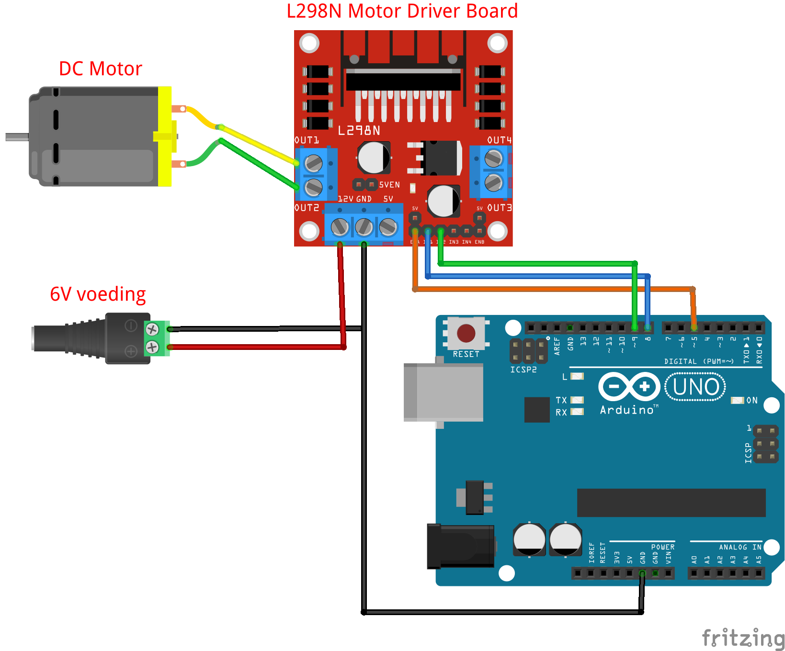

Opdracht 3: DC‑motor met L298N Motor Driver
In deze opdracht leer je een DC‑motor aan te sturen met de L298N dual H‑bridge motor driver. Je bestuurt richting (vooruit/achteruit) met twee IN‑pinnen en de snelheid met PWM op de EN‑pin.
L298N Motor Driver
Wanneer je DC motoren wilt aansturen en de richting en snelheid van de motoren wilt regelen, kun je de L298N Motor Driver gebruiken. De L298N is een elektronische module waarmee je een Arduino veilig en eenvoudig DC-motoren of stappenmotoren kunt aansturen.
Een Arduino kan zelf geen motor direct laten draaien, omdat:
- een motor meer stroom nodig heeft dan de Arduino kan leveren,
- en vaak ook een hogere spanning (bijv. 6V, 9V of 12V) nodig heeft.
De L298N werkt dan als een soort tussenstuk (driver):
- Hij krijgt een apart voedingsspanningssignaal voor de motor (bijv. van een batterij of adapter).
- De Arduino geeft alleen kleine signaaltjes (HIGH/LOW of PWM).
- De L298N zorgt er vervolgens voor dat de motor met voldoende spanning en stroom draait.
Belangrijkste functies van de L298N
- Twee motoren aansturen – Je kunt met één module 2 DC-motoren onafhankelijk bedienen.
- Richting regelen – Je kunt een motor vooruit en achteruit laten draaien.
- Snelheid regelen – Door een PWM-signaal van de Arduino te gebruiken, kun je de motorsnelheid traploos instellen.
- Beveiliging – De module heeft een koelblok en beschermt de Arduino tegen overbelasting.
Veiligheid & voeding
- Gebruik een aparte voeding voor de motoren (bijv. 6–12 V op
+12VenGNDvan de L298N). - GND van Arduino en L298N moet gemeenschappelijk zijn (koppel de GND’s).
- Verwijder het 5V-EN jumper alleen als je zélf een externe 5 V toevoert. Laat ‘m zitten als je de onboard regulator gebruikt (motorvoeding ≥ ~7 V).
- Voed de Arduino bij voorkeur via USB of eigen 5 V; niet vanaf de L298N 5 V pin.
Benodigdheden
- Arduino Uno
- L298N motor driver module
- 1× DC‑motor (voor 3.1–3.4), 2× DC‑motor (voor 3.5)
- Externe motorvoeding (6–12 V, afhankelijk van motor)
- Breadboard & jumper wires
- (Voor 3.4) 2× drukknop + 2× 10 kΩ pull‑down weerstanden
Pinmapping (aanbevolen)
| Functie | L298N pin | Arduino pin |
|---|---|---|
| Motor A PWM (snelheid) | ENA | D5 (~PWM) |
| Motor A richting 1 | IN1 | D8 |
| Motor A richting 2 | IN2 | D9 |
| (optioneel) Motor B PWM | ENB | D6 (~PWM) |
| (optioneel) Motor B richting 1 | IN3 | D10 |
| (optioneel) Motor B richting 2 | IN4 | D11 |
Aansluiten motorvoeding: + naar +12V op L298N, - naar GND op L298N. Verbind GND L298N met GND Arduino.

3.1 Eén motor aansluiten en laten draaien
Sluit één DC‑motor aan op Motor A van de L298N (klemmen OUT1 en OUT2). Gebruik onderstaand voorbeeld om de motor 3 s vooruit te laten draaien en dan te stoppen.
// Opdracht 3.1 – Eén motor, vooruit en stop
const int ENA = 5; // PWM snelheidsregeling
const int IN1 = 8; // Richting A
const int IN2 = 9; // Richting B
void setup() {
pinMode(ENA, OUTPUT);
pinMode(IN1, OUTPUT);
pinMode(IN2, OUTPUT);
// Vooruit volle snelheid
digitalWrite(IN1, HIGH);
digitalWrite(IN2, LOW);
analogWrite(ENA, 255); // 0..255
delay(3000);
// Stop (rem los: beide LOW)
analogWrite(ENA, 0);
digitalWrite(IN1, LOW);
digitalWrite(IN2, LOW);
}
void loop() {
// niets
}
Tip: Motor draait de andere kant op? Verwissel de draden van de motor óf wissel IN1/IN2 (HIGH/LOW).
Verwerkingsopdrachten
3.2 Vooruit en achteruit
Opdracht: Laat de motor 2 s vooruit, dan 1 s stoppen, en vervolgens 2 s achteruit, dan weer stoppen. Herhaal dit.
Hints:
- Vooruit:
IN1=HIGH, IN2=LOW - Achteruit:
IN1=LOW, IN2=HIGH - Stoppen:
ENA=0(en beideINLOW)
3.3 Langzamer (halve snelheid)
Opdracht: Laat de motor 2 s op halve snelheid vooruit (≈ analogWrite(ENA, 128)), 1 s stop, en 2 s op halve snelheid achteruit.
3.4 Besturing met knoppen
Opdracht: Gebruik 2 knoppen om de motor aan te sturen:
- Knop Vooruit → motor vooruit op snelheid PWM=180
- Knop Achteruit → motor achteruit op snelheid PWM=180
- Geen knop ingedrukt → motor stopt
Bekabeling (pull‑down, zoals jullie eerder leerden): - Elke knop: één poot naar digitale pin (bijv. D2 of D3), andere poot via 10 kΩ naar GND (pull‑down). - Verbind de digitale pin ook via de knop met 5 V. - Resultaat: ingedrukt = HIGH, los = LOW.
3.5 Tweede motor toevoegen (Motor B)
Sluit een tweede DC‑motor aan op Motor B (OUT3/OUT4).
Gebruik onderstaande code om beide motoren aan te sturen (handig voor een robotbasis).
Uitleg functies
Nog niet bekend met functies? Lees eerst de uitleg over functies.
// 3.5 – Twee motoren (A en B)
const int ENA = 5, IN1 = 8, IN2 = 9; // Motor A
const int ENB = 6, IN3 = 10, IN4 = 11; // Motor B
void motorA_vooruit(int pwm){ digitalWrite(IN1,HIGH); digitalWrite(IN2,LOW); analogWrite(ENA,pwm); }
void motorA_achteruit(int pwm){ digitalWrite(IN1,LOW); digitalWrite(IN2,HIGH); analogWrite(ENA,pwm); }
void motorA_stop(){ analogWrite(ENA,0); digitalWrite(IN1,LOW); digitalWrite(IN2,LOW); }
void motorB_vooruit(int pwm){ digitalWrite(IN3,HIGH); digitalWrite(IN4,LOW); analogWrite(ENB,pwm); }
void motorB_achteruit(int pwm){ digitalWrite(IN3,LOW); digitalWrite(IN4,HIGH); analogWrite(ENB,pwm); }
void motorB_stop(){ analogWrite(ENB,0); digitalWrite(IN3,LOW); digitalWrite(IN4,LOW); }
void setup(){
pinMode(ENA,OUTPUT); pinMode(IN1,OUTPUT); pinMode(IN2,OUTPUT);
pinMode(ENB,OUTPUT); pinMode(IN3,OUTPUT); pinMode(IN4,OUTPUT);
}
void loop(){
// Vooruit rijden (beide motoren vooruit)
motorA_vooruit(200);
motorB_vooruit(200);
delay(2000);
// Achteruit
motorA_achteruit(200);
motorB_achteruit(200);
delay(2000);
// Bocht (links langzamer, rechts sneller)
motorA_vooruit(120);
motorB_vooruit(220);
delay(2000);
motorA_stop();
motorB_stop();
delay(1000);
}
Probleemoplossing (FAQ)
- Motor tikt maar draait niet: verhoog de voeding (binnen specs), check bedrading, zet PWM hoger.
- Motor draait de verkeerde kant op: verwissel
IN1/IN2logica of de twee motordraden. - Arduino reset bij starten motor: voeding zakt in; gebruik aparte motorvoeding en gemeenschappelijke GND.
- L298N wordt warm: normaal bij hogere stroom; gebruik koelblok/ventilatie en blijf binnen motorspecificaties.